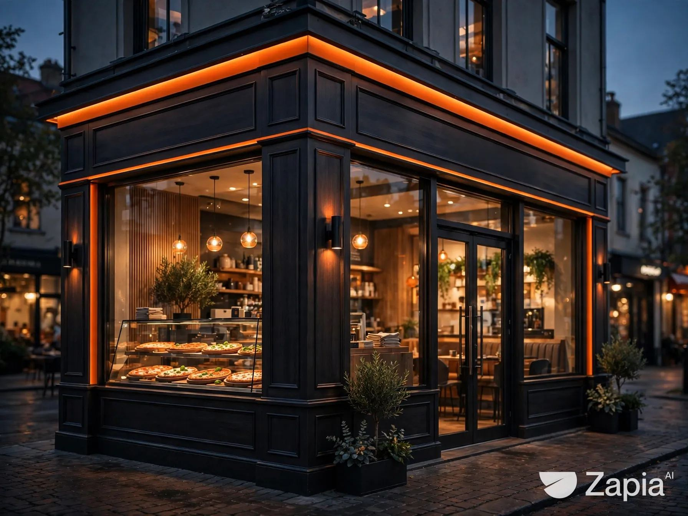
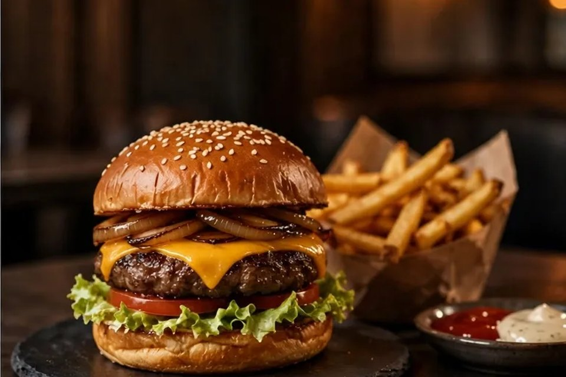
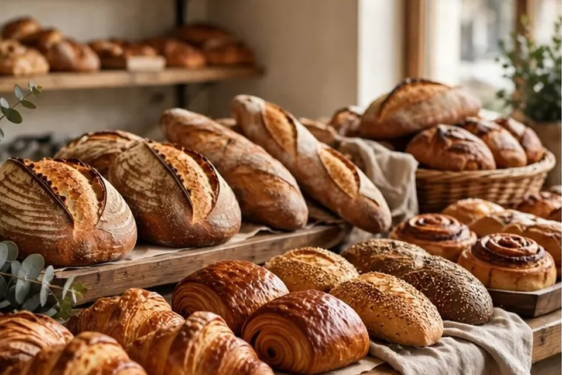
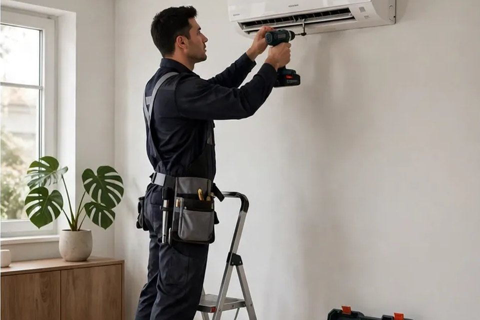
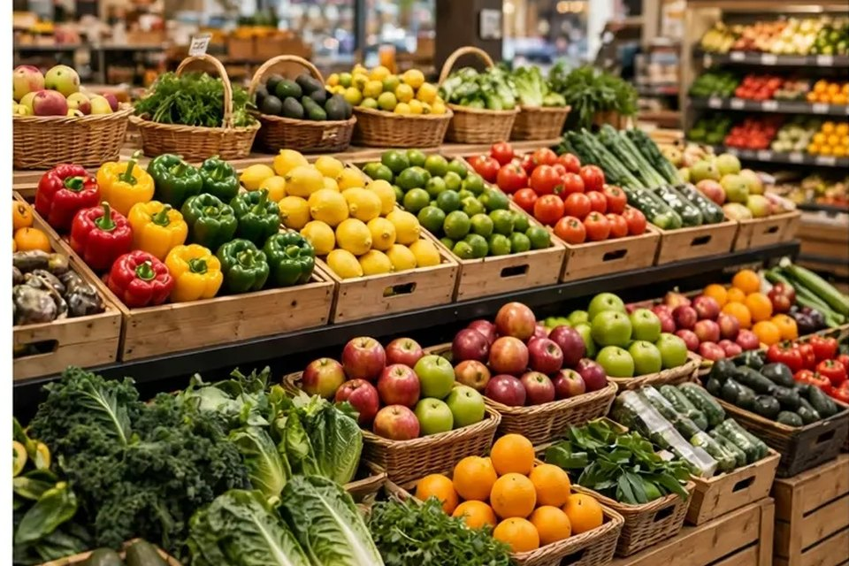
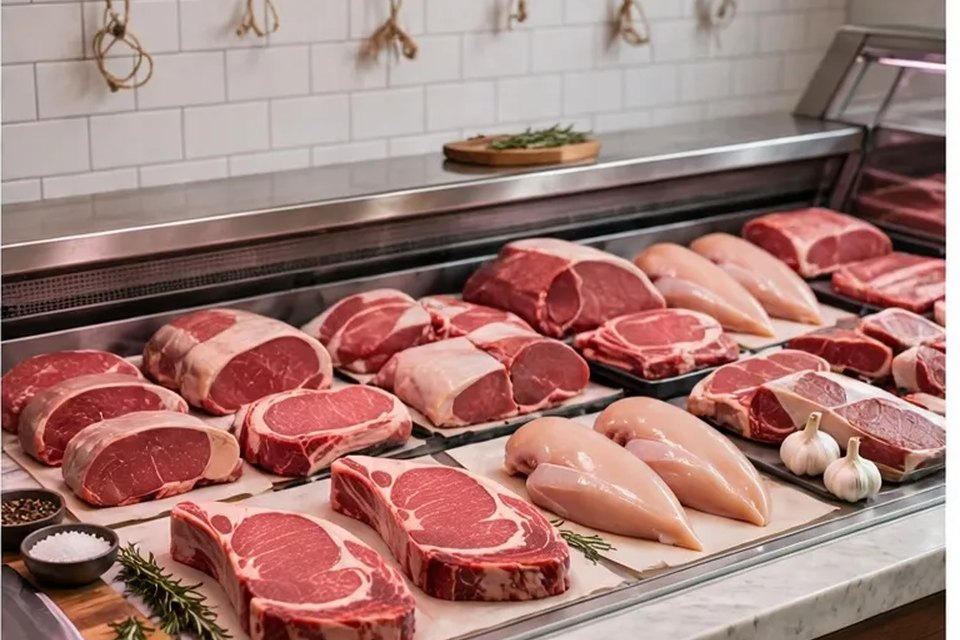
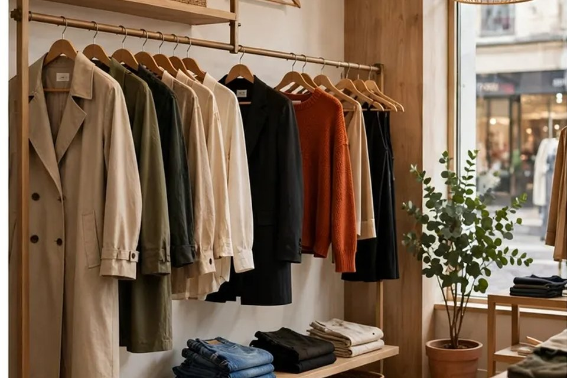

01 / 13DEMO · GASTRONOMIASite + PDVpara pizzaria.✳ABRIR SITE DEMO ↗
PORTFÓLIO MM
Sites e sistemas criados para diferentes tipos de negócio. Escolha um projeto para conhecer.
PORTFÓLIO COMPLETO — 13

01 / 13DEMO · GASTRONOMIASite + PDV
02 / 13WEB · GASTRONOMIABom gosto
03 / 13SISTEMA · PADARIAPedidos
06 / 13WEB · CLIMATIZAÇÃOConforto
07 / 13WEB · VAREJOSeu mercado,
08 / 13WEB · ENCOMENDASPraticidade
09 / 13WEB · MODAEstilo com 13 / 13DEMO · IMÓVEISUm novo lugar
13 / 13DEMO · IMÓVEISUm novo lugar